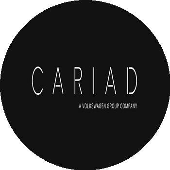
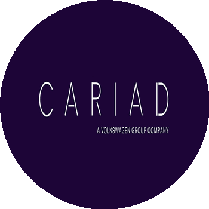
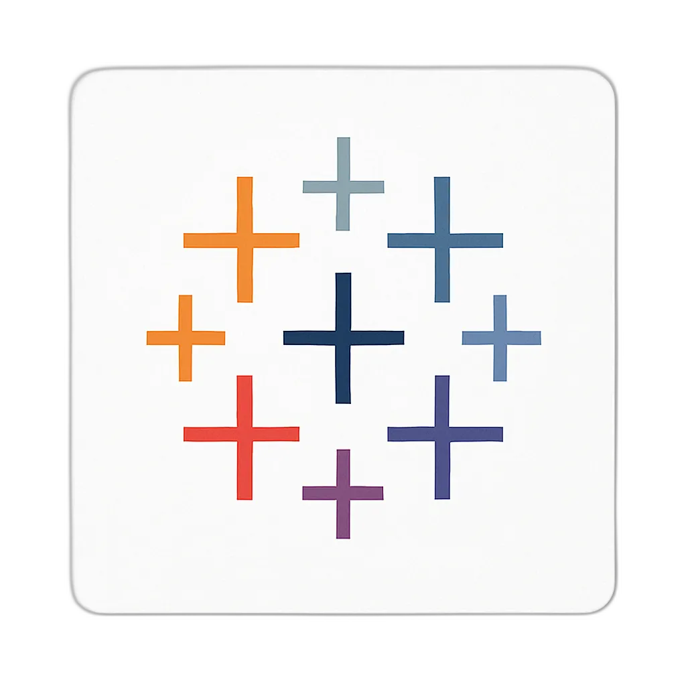
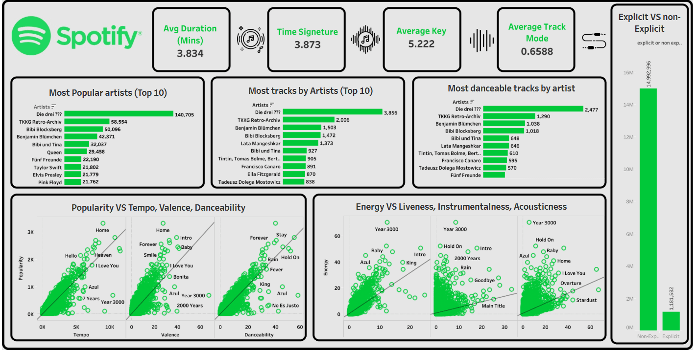
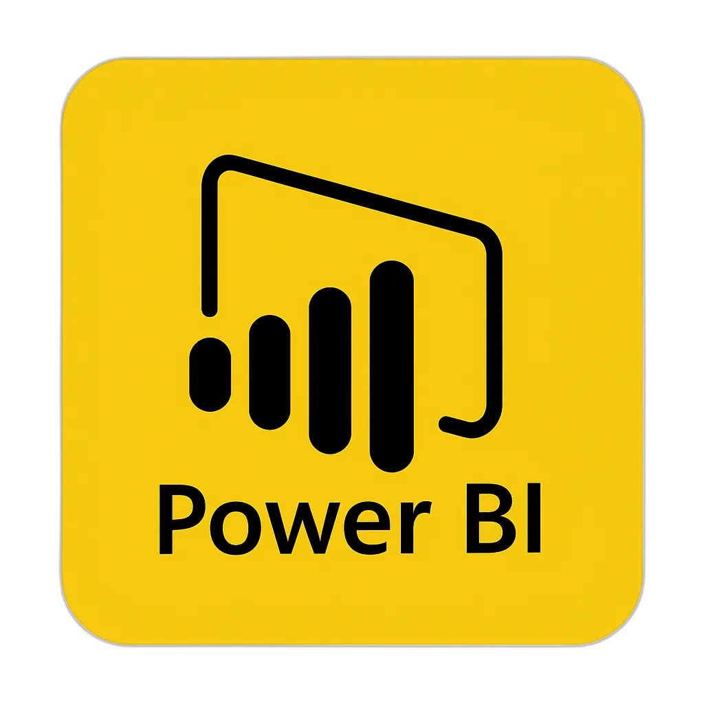
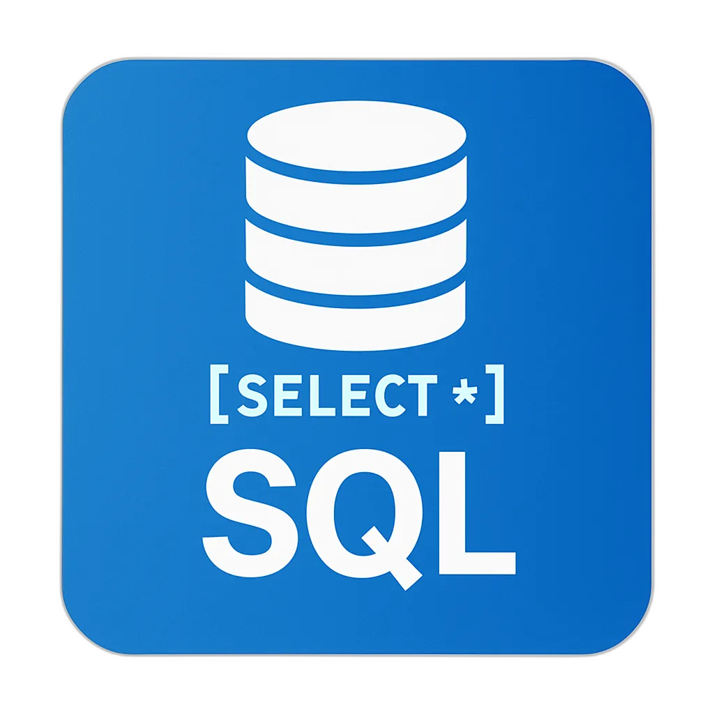
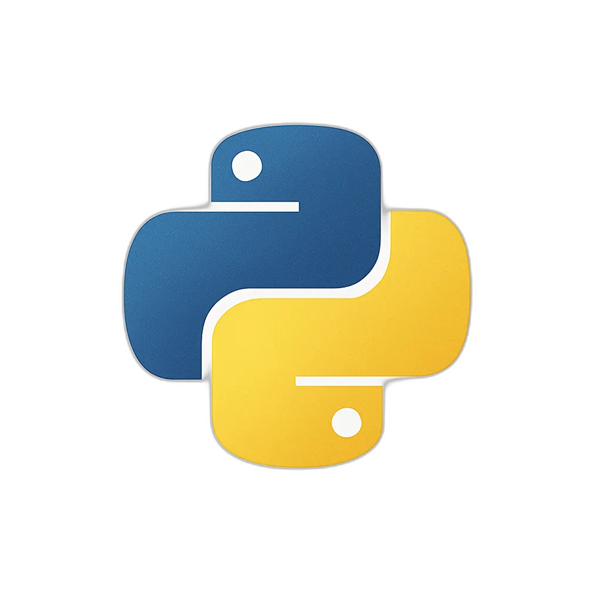
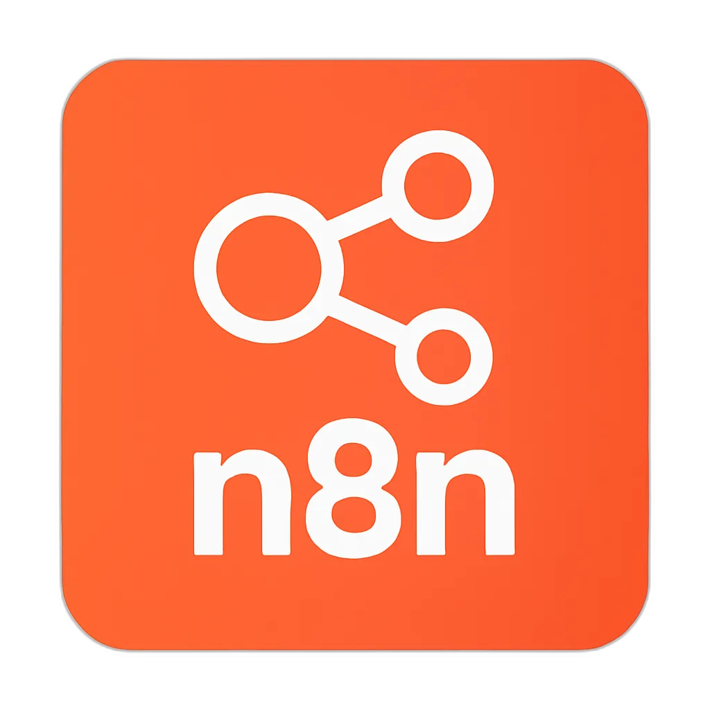

Rushikesh Pawar
Business & Data Analyst | Berlin
I cut manual reporting by 40% at Lecturio by building automated Power BI dashboards that finance and sales teams actually use.


Reduction in manual reporting hours at Lecturio
Faster business query response at CARIAD via data centralization
Qlik Sense dashboard load time improvement at KPMG
About Me
Years of finance analytics across EdTech, Automotive & Consulting
Industries: Lecturio, CARIAD/VW, KPMG
From Power BI dashboards to production RAG chatbots
I'm a Senior Business Analyst at Lecturio GmbH in Berlin with 4+ years of experience in finance analytics, royalty distribution, and process automation across EdTech, automotive (Volkswagen/CARIAD), and consulting (KPMG). I build Power BI dashboards, design revenue reconciliation frameworks, and automate end-to-end data pipelines using Python, N8n, and AI tools like Claude Code. I recently built a production RAG chatbot that enables stakeholders to query financial data in natural language.
Work Experience
Senior Business Analyst
Lecturio GmbH
Sept 2023 – present
-
Challenge
Manual, time-consuming finance reporting across multiple data sources, lack of real-time sales insights, and a quarterly royalty distribution process for 300+ content authors that required end-to-end automation.
-
Solution
Built Power BI dashboards (DAX, Power Query, SQL) for Finance and Sales, designed a revenue gap analysis framework reconciling accounting systems with Salesforce CRM, and automated the end-to-end royalty distribution for 300+ authors. Leveraged N8n and Claude Code to replace manual workflows with scalable, AI-driven pipelines. Delivered strategic analyses to CFO and CEO.
-
Impact
Reduced reporting cycle time by 40%, built self-service analytics for 300+ stakeholders across Finance, Sales, and Operations, and delivered an AI-powered RAG chatbot enabling natural language queries on financial data.
Technologies:
Working Student Data Analytics
CARIAD SE — Volkswagen Group
Sept 2022 – Aug 2023
-
Challenge
Disparate data sources and fragmented reporting tools with unclear performance metrics across teams.
-
Solution
Centralized cross-functional analytics using Amazon Athena (SQL), Power BI, and AWS, replacing fragmented tools. Defined and tracked KPIs across Demand, Product, and Supply functions. Led end-to-end analytics project lifecycle — from requirements gathering to dashboard delivery.
-
Impact
Improved data accessibility, achieving 25% faster response time to business queries and enhanced cross-team collaboration.
Technologies:
Working Student Data Analytics
KPMG Deutschland
Mar 2022 – Aug 2022
-
Challenge
Complex analysis of large SAP authorization datasets and slow Qlik Sense dashboard performance impacting audit workflows.
-
Solution
Employed SQL Server for data analysis, automated data processing with Python, and enhanced dashboard performance with targeted load scripts in an agile environment.
-
Impact
Achieved 50% improvement in Qlik Sense dashboard performance and delivered actionable SAP insights, enhancing audit accuracy.
Technologies:


Inventory Controller
S.M. Auto Engineering
Nov 2019 – May 2021
Analyzed spare parts data to identify cost savings — achieved 0.2M₹ savings in year one.
My Projects

Spotify Streaming Analytics
The Problem
Raw Spotify streaming data lacks visual patterns for understanding genre trends, artist performance, and listening behavior.
The Approach
- Designed in Tableau with custom tooltips & interactive filters
- Applied color theory and typography for visual clarity
- Competed in Onyx Data visualization challenge
The Result
Awarded "Best Aesthetics" by Onyx Data for dashboard design excellence.

AI-Powered Finance Chatbot
Built a production RAG (Retrieval-Augmented Generation) chatbot that automates extraction of Power BI financial reports using LLMs, stores embeddings in a Pinecone vector database, and enables stakeholders to query financial insights in natural language via a Google Apps Script UI.
Invoice Automation Pipeline
Built an app using AI-assisted vibe coding that takes CSV/Excel exports from a Power BI dashboard, auto-generates PDF invoices, and uploads them to pingen.de for physical mail delivery — eliminating hours of manual processing per batch.
My Tech Toolbelt
Data Visualization & BI

Power BI Tableau DAX Looker Qlik Sense15+ production dashboards built · 4+ years daily use
Data Engineering & Analytics

SQL
Python AWS Athena BigQuery dbt AirflowComplex queries, data modeling, ETL/ELT pipelines · 5 database platforms
Automation & AI

n8n AI Agents Claude Code RAG Pipelines LLMs Prompt Engineering CursorBuilt production RAG chatbot · Automated data pipelines · Daily AI tool use
Platforms
Enterprise integrations & cloud infrastructure
Education
Master of Business Administration & Engineering
HTW Berlin — Hochschule für Technik und Wirtschaft
Oct 2021 – Oct 2023
Bachelor of Mechanical Engineering
Savitribai Phule Pune University
Aug 2015 – Aug 2019
Certifications
Let’s Work Together
Currently at Lecturio GmbH in Berlin — open to new opportunities in data analytics, BI, and AI-powered reporting.